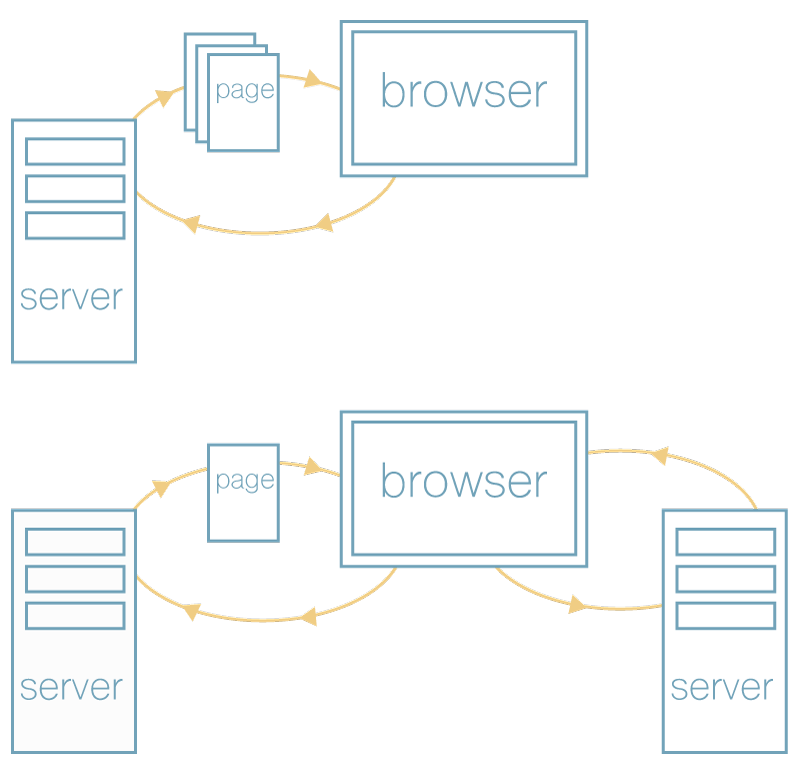

The Developer and the DOM
A history of manipulation and abstraction.
Presented by Zack Michael / Greg Noack
Who are we?
We are two developers from Squishymedia.
Zack Michael

Gregory Noack

Why are we here?
Where did javascript come from?
document.write("Hello Open Source Bridge!");
This DOM?

Nah, This DOM!

What was javascript intended for?
Problem 1:
All the browsers are different
Pain Points
- Selector Searching
- DOM traversal
- DOM manipulation
- XHR/AJAX
Solution: Libraries that provide a common API
- jQuery
- Mootools
- Prototype
- Others
Problem 2: Application Architecture
How do we organize our applications?
Solution: Early frameworks
- ExtJS
- YUI
- Dojo
- and many more
Complexity increases

Loading Everything...
- Ajax everywhere
- More complex interactions
- Mobile devices create a new experience
Problem 3: Mobile Web
- Tiny screens
- Spotty networks
- Weak hardware
Solutions:
- Responsiveness
- Device detection
- Single Page Application (SPA)
Single Page Applications
Problem 4: How to deal with increased complexity
- Single page applications
- Tons of logic on the client
- Routing
- Templating
- Need to focus on business logic
Solution: Next generation frameworks
- Backbone
- Angular
- Ember
- Knockout
What did they add?
- Client side routing
- Data Binding
- Module systems
- Style Guides and Best Practices
Diffing algorithm
Problem 4: Performance and Scalability
- Recent frameworks were built on server side paradigms
- They still relied on the DOM
Solution: Another wave of framework evolution
- Angular 2.0
- React
- Riot
- JSBlocks
Virtual DOM

Virtual DOM Possibilities

Language enhancements
- ECMA Script 6
- TypeScript
Components
- Encapsulate functionality
- Build views like nesting dolls
Problems we face today
The javascript community has an insane churn rate.